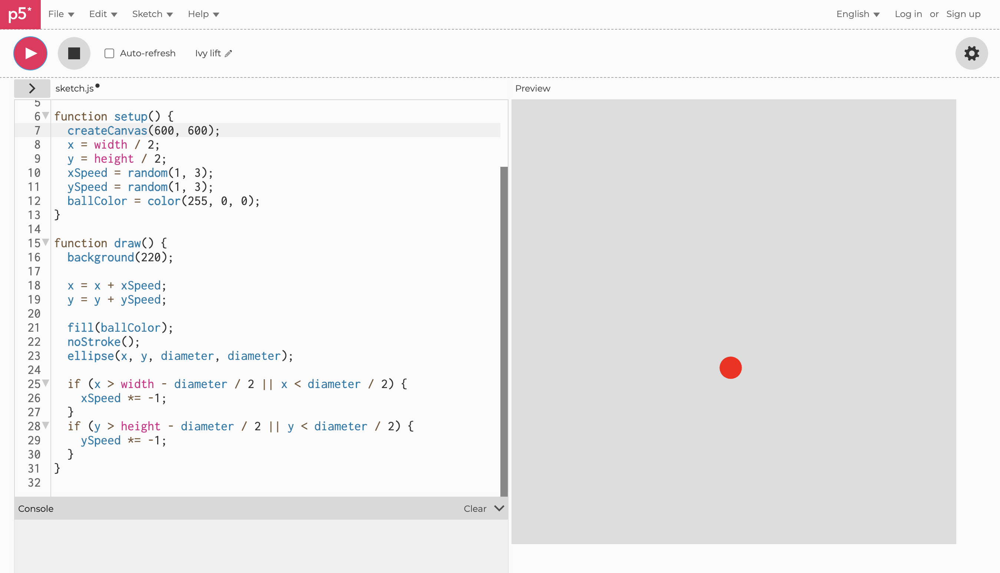
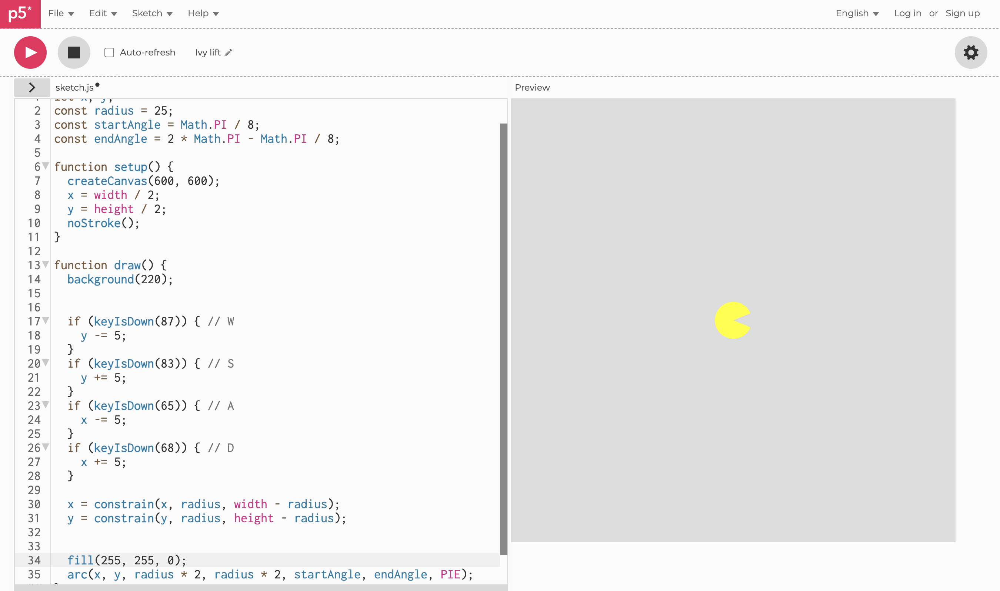
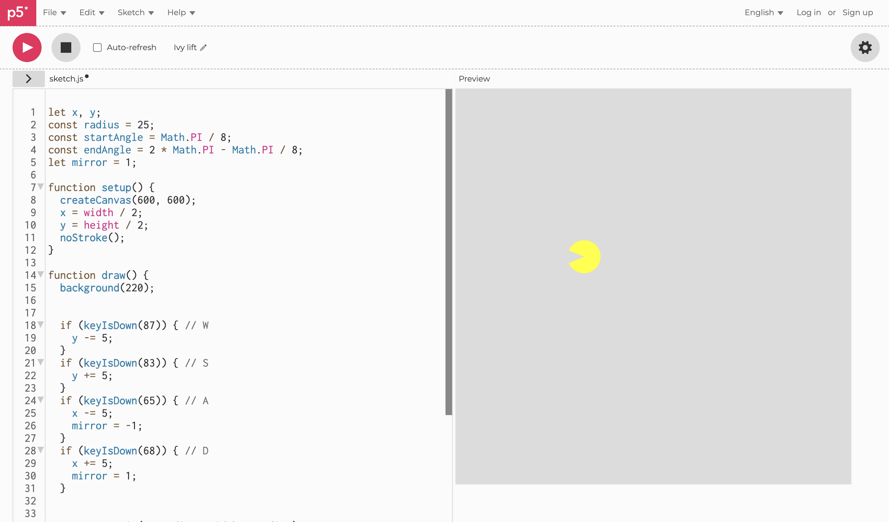
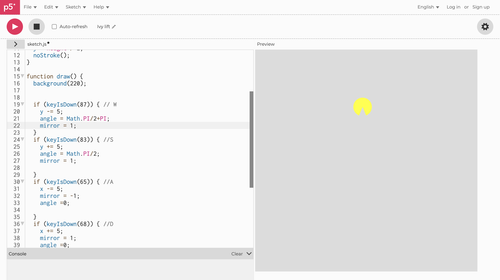
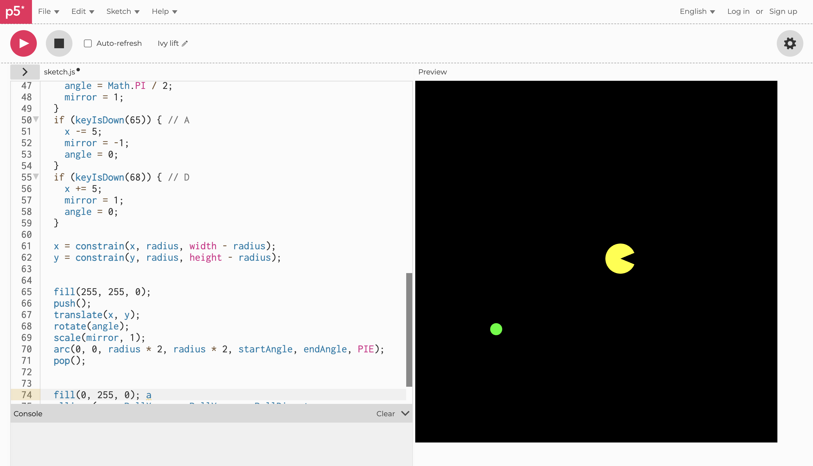
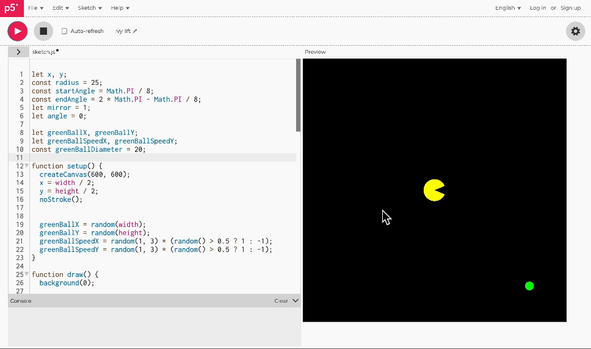
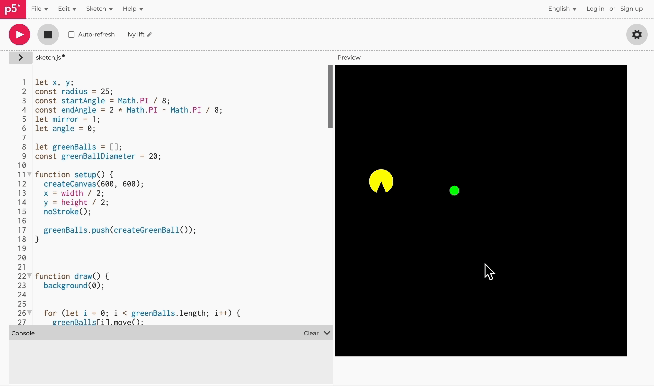

Week6_Homework_Zhuo
Try to draw a red circle on screen
Change the red circle to a yellow fan, then use the WASD keyboard buttons to control the yellow fan's up left down right movement
Change the orientation of the yellow fan notch so that the notch faces in the forward direction. (The notch always faces left when you hold down the A button to move left). Use mirror to change the left and right facing directions.
Use angle to change the top and bottom orientation of the yellow fan notch.Initially use rotate to change orientation, rotating -90 degrees each time you hit the W key. But after rotating it changes back again, resulting in a constant 90 degree rotation of the yellow sector when the W key is held down all the time
Add a green circle that randomly appears to move.
When the yellow fan touches the green circle, the circle disappears. dist() is used to detect if the yellow fan is in contact with the green circle and a collision relationship occurs. When collision occurs: distance < radius, remove the green circle from the canvas (using display will cause the second green ball not to be displayed, don't know how to fix it QAQ)
When the green ball disappears, a green ball reappears. Cycle.